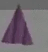

The Needles Piano is an instrument resembling a spinning purple pyramid. It is given by Marvin to Pall in the school on two occasions shown within recordings.
It appears to be part of the rebirthing process inside the game.
The Needles Piano is first seen in the loading screen when entering the school, as shown in the first recording shown in Petscop 11.
During a recording shown through demo playback in Petscop 11, the player enters a classroom on the first floor of the school, where they find Marvin, who requests that they "play music for baby[...]" and summons the Needles Piano. When the player picks it up, "Play Needles Piano Now" flashes on screen. He uses the Needles Piano to play music which Marvin calls "Lovely" but eventually the instrument's notes sour and the Needles Piano turns red, ending with Marvin referring to it as "bad music" and telling him to "do it right next time".
In Petscop 12, Belle's captor refers to "the Needles".
During Petscop 23, in the school basement, Marvin summons the Needles Piano after the player places Care B into the machine. The Needles Piano is used to attempt to rebirth Care, but the player appears to play it incorrectly, angering Marvin.
As the first floor school classroom is loading, a piano with a PlayStation controller attached to it is shown in a loading screen. The same piano appears within the ghost rooms. It is unclear whether "Needles Piano" also refers to the pianos in the ghost rooms; if so, the "Play Needles Piano Now" may be a prompt for the player to begin using the piano in the ghost rooms.
The Needles Piano could also be related to the tools, as there is an instrument of similar shape with needles that are used to "voice" a piano. While tuning is adjusting the pitch the piano's strings vibrate at, voicing involves using a tool with needles to loosen the felt fibers of the hammers that hit the strings. The tools being based on a piano voicing tool would also fit with the suggestion of the tools being able to hurt people, as said by the pink tool and (possibly) as seen when Paul uses a white tool in the windmill.
{kind=link}
{kind=link}
{kind=link}
{kind=link}